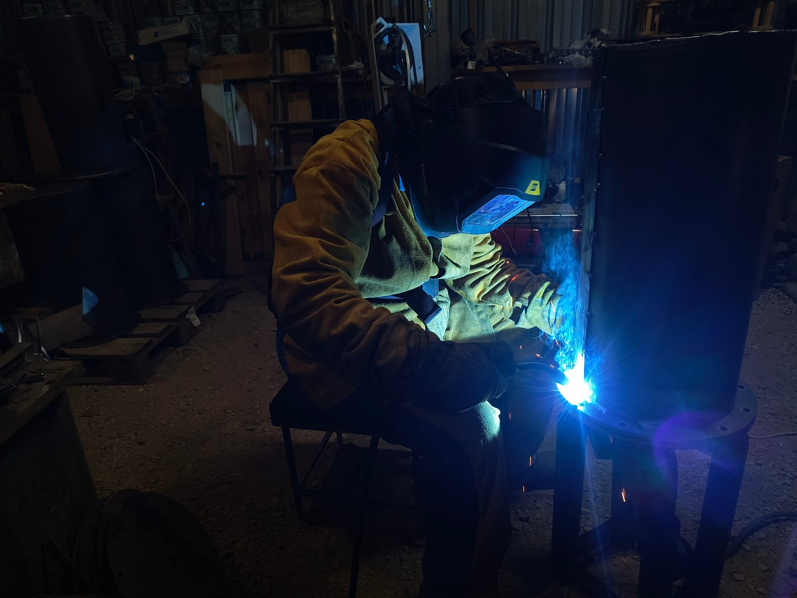
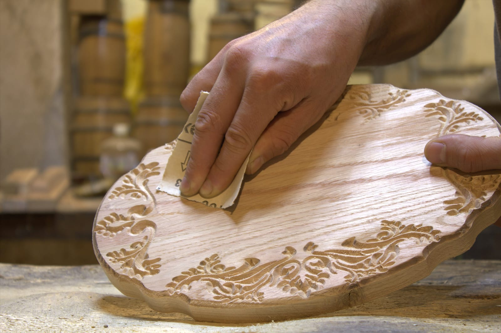

Работилница, не конвейер.
ЕТ „Боян Тонков“ е малка семейна фирма от село Караисен, община Павликени. Създадена е през 1992 г.

Кои сме
Дърво, метал и електроника — под един покрив.
Произвеждаме малки партиди прецизно изработени бъчварски съдове по класическата технология, както и 2D и 3D изделия от дърво на CNC фреза — по каталог или по ваша заявка.
Наред с дървото разработваме уреди за наблюдение и управление от разстояние, пелетни горелки и котли. А автоклавът ни за домашни консерви днес е най-търсеното ни изделие.
Общото между всичко това е начинът, по който работим: проектираме, изработваме и поддържаме сами.
Как работим
Четири неща, от които не отстъпваме.
Здраво и опростено
Без излишни оскъпявания, но технологично издържано.
Български компоненти
Механизми и части, които се намират и сменят лесно.
Свобода за майстора
Подкрепяме ви, ако искате сами да окомплектовате и пуснете продукта.
Вижте на място
Добре дошли сте за демонстрация — след кратка уговорка.

На малки серии
Работим на малки партиди, което ни дава свободата да контролираме качеството.

Технологията помага. Майсторството завършва.
Използваме CNC машини за прецизна обработка, но не оставяме всичко на машините. Всяко изделие преминава през ръчно шлайфане, финишна обработка и внимателна проверка.
- 1992
- година на основаване
- 140+
- автоклава в домовете на хората
- 4
- направления под един покрив
Елате да видите на място.
Имате въпроси или конкретна идея? Елате да се запознаем. Ще поговорим, ще ви покажем какво правим и ще изпием по едно кафе.
- Автоклави, дърво, котли и горелки 0889 906 296 Боян Тонков · bt@tonkov.eu
- Мониторинг и контрол 0883 519 006 Валентин Тонков · vt@tonkov.eu